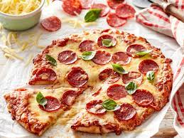

Pepperoni Pizza
HomePage

Description
This is a delicious homemade pepperoni pizza that takes only 40 minutes to make. With 20 minutes of prep and 20 minutes of cooking you can have a nice warm pizza with a serving size of 6 prepared. Requires a oven, whisk and two 12-inch pizza pans.
Ingredients
(Pizza Sauce)
- ½ cup water
- ½ (12 ounce) can CONTADINA® Tomato Paste
- 1 teaspoon dried oregano, crushed
- 1 teaspoon dried basil, crushed
- ½ teaspoon garlic powder
- ½ teaspoon onion powder
- ½ teaspoon sugar
- ½ teaspoon salt
- ¼ teaspoon black pepper
(Pizza Crust)
- 3¼ cups all-purpose flour, or more as needed
- 2 (.25 ounce) envelopes FLEISCHMANN'S® Pizza Crust Yeast or RapidRise® Yeast
- 1 tablespoon sugar
- 1½ teaspoons salt
- 1⅓ cups very warm water (120 degrees F to 130 degrees F)
- ⅓ cup oil
(Pizza Toppings)
- 1 cup shredded mozzarella cheese, or more to taste
- 1 (6 ounce) package HORMEL® Pepperoni
Steps
- Preheat the oven to 425 degrees F (220 degrees C). Grease two 12-inch pizza pans.
- Make sauce: Whisk together water, tomato paste, oregano, basil, garlic powder, onion powder, sugar, salt, and pepper in a medium bowl until smooth. Set aside.
- Make crust: Combine 2 cups flour, yeast, sugar, and salt in a large bowl.
- Add warm water and oil; mix until well blended, about 1 minute. Gradually add remaining flour, a little at a time, until a soft, sticky dough forms.
- Transfer dough to a floured surface; knead until dough is smooth and elastic, about 4 minutes. Add more flour as needed.
- Divide dough in half. Lightly flour your hands, then pat each piece of dough onto the prepared pizza pans.
- Top dough with sauce, cheese, and pepperoni.
- Bake in the preheated oven until crusts are browned and cheese is bubbly, 18 to 20 minutes.
- Rotate pizza pans between the top and bottom oven racks halfway through baking.
More Recipes!